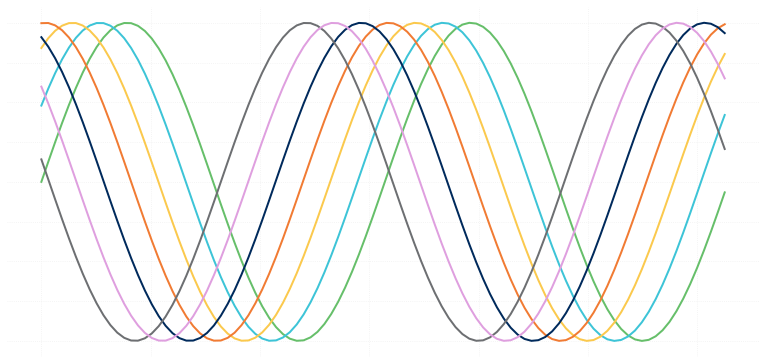

Lately, I have found myself always changing the style of my plots in Python with the same settings.
I'll start to plot out a graph and then realizet that I need to find some code from the last time I created a
visual, copy it over, and then make what ever changes I wanted for that particular image.
I started reading as much as I could about creating my own style sheet. It seemed a bit intimidating,
particularly because I couldn't find a source that went through a step by step process for creating your own
style sheet. It took about two seconds of conversation with a friend before I came to the what-is-now-clear
conclusion that I could take an existing style sheet, open up the file, and figure it out from there. If you
can't build it from the ground up, take it apart and try to rebuild that.
The fivethirtyeight style sheet was the clear frontrunner in candidates to mimic. I love their blog, their
overall style, and their data driven approach to journalism. I used their style sheet but changed a lot of
the parameters for color, line size, and then added in my own take on grid lines. I tend to like a clean look:
white space, no borders on the top and right of a graph, and de-emphasized x and y tick marks and labels.
Defining the style was easy, but getting it to work in my Jupyter notebook was a different story. I saved the style
where I was sure it belonged (in the same directory as all the other matplotlib style files). In the end, I
decided to create my own directory for my style sheets and to call the sytles with reference to the full file path.
And that worked!
You can check out the implementation of the style sheet as well as the style sheet itself by following this link
to my GitHub repo:
1ScottWright GitHub

Python Plotting